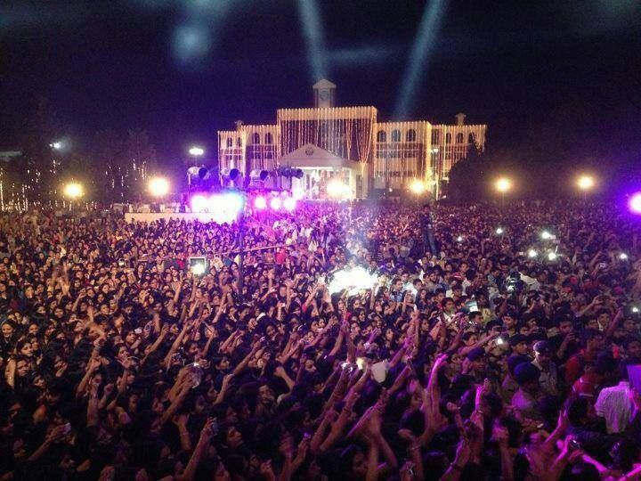

College days are among the best days of our life — the friends we make, the time we spend hanging out in the canteen, sharing everything from class notes to class gossip and full of exciting events. During which a student learns new things and comes across several experiences. College festivals offer a chance to do all this and much more to a fresher who is willing to hop on to the festival bandwagon. Every student should experience this organization process at least once during the course of their undergraduate studies. It instills the importance of originality and individuality that are the most vital aspects of engineering. In fact you have to say that the importance of Technical and Cultural Events in college equals the importance of education. Reputed engineering colleges in India keep on organizing college festivals every now and then. Almost every college has its own festival or a set of festivals ranging from cultural extravaganzas to technical wizardry. Are you aware of the importance of these festivals? Firstly, it helps the educational institutions unifies students from various places. It signifies the need to Work together for Success. Technical festivals implant the responsibility of every person in the team. Every person has their own interests according to which they are assigned to tasks. Secondly, these college festivals promote creative ideas and provide a platform for scholars to share their knowledge. It aims to inspire the students to think innovatively, develop and come out as a pioneer in implementing. Thirdly, attending these festivals gives knowledge on the different streams of study namely Sports events, music, dance, quizzes and seminars are the integral part of the college festival. Organization of f... ... middle of paper ...
